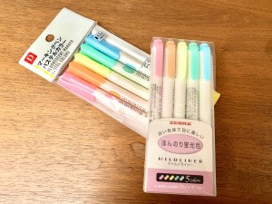
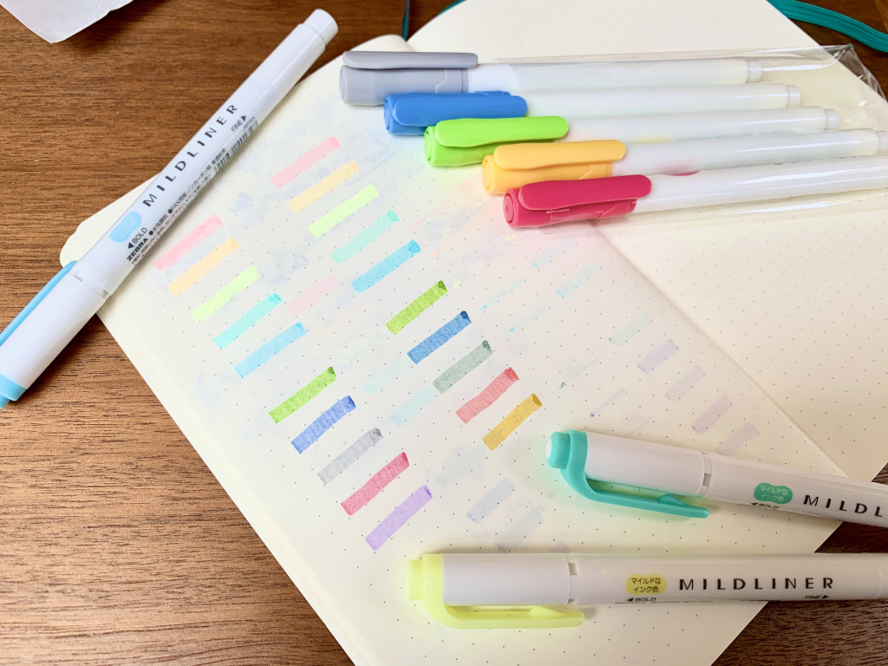
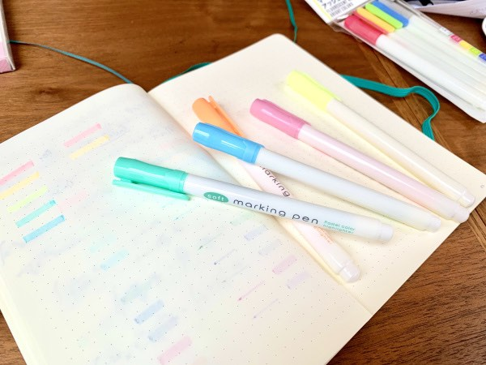

Note: this article contains affiliate links – buying anything using these links helps support me and my blog without any extra cost to you!
One of the absolute highlighter brand-leaders for stationery lovers and bujo enthusiasts is the Zebra Mildliners, a Japanese brand which looks more like a standard writing pen than a highlighter! These highlighters are well renowned for their unique "mild" colour, making them a more aesthetic choice to standard fluorescent markers. This has led to mildliners being the must-have item for all from study bloggers to bullet journalists, stationery addicts to doodlers.

Mildliners are rarely available to buy in-store in the UK, but I was lucky enough to find some when I visited family in Malaysia this summer, as well as purchasing a large quantity of stationery.
These pens really are beautiful to use – ink does not collect as easily at the end of a stroke as other highlighters do (e.g. Stabilo Pastel BOSS highlighters, another brand leader) and so the pens are less prone to smudging. The colours are just perfect for my study notes and bujo pages so I really can’t recommend them enough.
Despite all this, generally Zebra Mildliners are not the cheapest of pens, often costing over £1 per highlighter. You can purchase the fluorescent and soft mild sets that I review on Amazon, which are well worth it for any budding study bloggers looking for aesthetic highlighters to add to their work.
However, for those lucky enough to live near a Daiso branch, there is a much cheaper alternative out there…
WELCOME TO DAISO MARKING PENS – A MUST-HAVE DUPE??
I stumbled across these highlighters during my time in Malaysia, and found the following colours were remarkably similar:
- Mild Pink
- Mild Orange
- Mild Yellow
- Mild Blue Green
- Mild Light Blue
Zebra Fluorescent Mildliner Set vs Daiso Pastel Colors
- Mild Green
- Mild Dark Blue
- Mild Grey
- Mild Red
- Mild Violet (no comparative Daiso marker, remaining colour is a warm yellow)
Zebra Soft Mild Mildliner Set vs Daiso Bright Colors
Looking at these pen swatches side-by-side, it’s pretty unbelievable that these pens are made by two completely different companies. The ink colours for 8 out of 10 pens is completely indistinguishable, with the only difference in reds being a slightly brighter Daiso highlighter. Both highlighter brands have 4.0mm nibs, with the Daiso marking pens being slightly juicier than the Zebra mildliners (leading to ink pooling more at the end of a line), although not as juicy as Stabilo BOSS highlighters.
One small negative for me is the cheap-looking barrel design of the Daiso pens; it is very minimalistic, yet does not do the quality of the ink justice for me. I must prefer the aesthetic of the mildliners, although I wouldn’t let the appearance of a pen stop me from using it! Another pretty obvious drawback of the Daiso highlighters is the lack of bullet nib on the other end of the pen, which is a notably unique feature of mildliners. However, as someone who rarely uses this nib, this wouldn’t hugely affect me, nor would it bother the vast majority of users.
Price Comparison
-

- Zebra Mildliner
- Daiso Marking Pens
Set of 5: 27MYR ≈ £5.20
Individually: 5.40MYR ≈ £1.05
Mildliners sold separately costed slightly more
Set of 5: 5.70MYR ≈ £1.10
Individually: 1.14MYR ≈ £0.22*
No option to buy separately
It is pretty clear to see that one mildliner costs as much as five Daiso marking pens, making the Daiso dupes significantly more affordable. With so little between them ink-wise, it’s hard to see how any downside to these knock-off highlighters. The one clear draw back for those in the West is the lack of Daiso stores around – it is pretty much impossible to find these Daiso products online.
*Exchange rates correct as of 23/09/2019